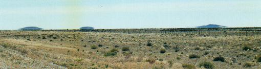

Día 3: Desde Comodoro Rivadavia hasta Comandante Luis Piedrabuena (590 km.) En comparación con la víspera, hoy sería un día de poco andar. La idea era desviarnos de la Ruta 3 hacia el mar en la zona al norte de San Julián, para recorrer unos 30 km. de ripio que pasan por varios puntos de interés ubicados en la zona costera. Más adelante la Ruta 3 atravesaría diversos lugares de interés geológico. Salimos temprano. Pronto entramos en Santa Cruz y, para celebrarlo, efectuamos la ya tradicional parada en una playa vecina a Punta Maqueda. Este lugar hermosísimo de la costa austral tiene arenas, restingas y acantilados con cuevas. En las restingas distantes se posan diversas aves marinas, que desafían el embate de las olas, resistiendo hasta que la marea creciente no les deja otra alternativa que volar - salvo el caso de las haraganes patos "quetro", que se alejan a flote. Los acantilados son de arenisca y tienen numerosos fósiles marinos antiguos, entre 15 a 30 millones de años. En algún momento prehistórico el mar había avanzado sobre las áreas hoy continentales. Estos peñascos y rocas que componen el acantilado fueron en aquel entonces el fondo del mar. Enormes cantidades de cenizas volcánicas, provenientes de erupciones en el oeste relacionadas con el ascenso de la Cordillera de los Andes, se depositaban en ese mar en finas capas. La ceniza se mezcló con arena y seres vivos: cangrejos, caracoles y esponjas, y se compactó. Se formó así una arenisca gris verdosa, algo cementada, que contiene los restos fósiles. Tras milenios, estas playas se elevaron y se erosionaron por el embate del mar, dejando a la vista un muro donde sobresalen claramente las valvas, testigos de la vida de este lugar en tiempos remotos. De hecho, grandes extensiones de la Patagonia se hallan sobre playas antiguas, repletas de fósiles marinos. Aquí caminamos por la playa. Y aquí, inspeccionando la línea de marea donde se acumulan algas y pequeñas valvas rotas, tuve la suerte de encontrar un par de pequeñísimos caracoles rojizos espiralados, en forma de “cucurucho”, de no más de 6 o 7 mm de largo: según mi interpretación de las guías es un Ataxocerithium pullum. ¿Lo has sentido nombrar? A manejar ahora por una de los tramos más hermosos de ruta de todo el país, ya que bordea la costa del interminable Golfo San Jorge, con playas y más acantilados. Con el color de fondo del mar azul intenso, observamos como las Golondrinas Negras se zambullían por detrás de los acantilados para llegar a sus nidos cavados en las barrancas. Pasamos Caleta Olivia, con su característica – y poco estética – estatua enorme de un figura humana: un monumento al trabajador petrolero. Y ahora nos internábamos en “tierra de nadie". A partir de este lugar, toda la civilización quedaba al norte, y delante nuestro solo había kilómetros de ruta desierta, que van al sur. Solo se pasa el solitario pueblo de Fitz Roy, y el ramal que sale hacia Puerto Deseado. Enseguida cruzamos el amplio valle del Río Deseado, de cauce casi siempre seco. Según los mojones que marcan la distancia en la Ruta 3, ya estábamos casi a 2.000 km. de Buenos Aires. Tamaña cifra nos da aliento, por que ya habíamos hecho mucho - pero también faltaba mucho para llegar a destino. A esa distancia de la capital nos invade la deliciosa sensación de estar en el medio de la nada, que es tal vez la principal motivación que nos mueve a realizar estos largos viajes. Los mojones ahora sólo aparecen cada 5 km.: 1990, 1995, 2005… pero… ¿Qué pasó con el mojón 2000? No está. Curiosamente, faltan los mojones de números redondos y de cifras curiosas o notables. Lo notamos a lo largo de todo el viaje: los que tienen número capicúa, los múltiplos de 100… Todos han sido robados. Pronto el camino pasaría por una zona de paisajes pintorescos, con lomas atractivas y rocas de interesantes colores: ocres, rojizas y hasta turquesas. Se debe a que la ruta cruza ahora, de norte a sur, por la enorme formación geológica “Macizo del Deseado”. Aquí la sangre de la tierra ha brotado a la superficie en varias formas. Se dice que estos mismos tipos de roca se hallan “del otro lado del charco”, es decir, en la distante costa este Africa, y esta curiosidad alimentó la hipótesis, luego comprobada, sobre el movimiento de los continentes. Justamente, se sostiene que el vulcanismo jurásico que se produjo en esta zona se debe a las grietas y fallas provocadas por la abertura del Océano Atlántico, hace apenas unos 100 millones de años. En esta formación se halla también el notable “Bosque Petrificado de Jaramillo”, que posee los troncos silicificados de araucarias más notables del mundo. Me costó seguir derecho por la ruta asfaltada: es que mis brazos querían volantear a la derecha y tomar el camino de ripio que lleva a este lugar maravilloso. Lo visitamos hace 4 años y sobraban los motivos para volver. Ya de vuelta a la zona de llanura, pasamos Tres Cerros, desde donde se aprecia a la distancia los tres volcanes que dan nombre a este aislado paraje. Las tres lomas bajas de basalto negro se ven azuladas por la distancia, apenas sobresaliendo por sobre la llanura totalmente horizontal. Debido al espejismo, en días de mucho calor el basalto debe "flotar" en el aire.  Desde este lugar de la ruta se aprecian los volcanes extinctos que dan su nombre a Tres Cerros Ya estábamos cerca de San Julián. Unos kilómetros
antes, al ver el cartel de “Playa La Mina”, doblamos hacia la costa, ubicada
a solo 3 o 4 km. Allí nos detuvimos por media hora y caminamos por
la “playa”, compuesta aquí por puro canto rodado. Piedra tras piedra,
todas midiendo entre 5 a 15 cm, se hallan apiladas formando cordones y
terrazas costeras, algunas de cierta antigüedad. Es casi lo único
que hay, salvo algunas valvas de caracoles, el viento, y el traqueteo de
las piedras en la playa provocado por el oleaje del Atlántico abierto.
Encontramos un Flamenco muerto y tuvimos la triste oportunidad de inspeccionar
este extraño animal bien de cerca: apreciamos sus plumas incendiadas
de rosa intenso, casi fucsia; sus patas, tan largas y finas que parecen
varillas de acero; y su pico extraño. Seguimos luego hacia el sur bordeando la costa. Nos detuvimos de vuelta en otra playa, donde observé al Jilguero Austral, la versión sureña de nuestro pajarito amarillo común. En estas latitudes la hembra es de color gris claro, casi blanco. Otra parada corta en un promontorio muy fosilífero de Cabo Curioso, y luego la última en un lugar que, por su nombre, prometía resultados al coleccionista, pero defraudó: la Playa de los Caracoles. Delante nuestro se halla ahora la Ría de San Julián, a cuyo margen está la ciudad. La marea llena la enorme ría, ingresando por un angosto estrecho. Más al sur, la gigantesca albúfera de San Julián: una gran planicie de inundación, de barro seco y estéril, que el mar cubre durante las crecidas más altas. Llegamos de nuevo a la ruta. Pronto el paisaje se hace absolutamente horizontal, todo a la redonda. Algunos dirán que no hay nada. Solo se aprecia el camino, las banquinas y el alambrado. Más allá comienza la eterna “estepa patagónica”. Está vegetada por pastos bajos (coirón amargo - Stipa sp.), amarillentos, y se extiende hasta el infinito. En algunos sitios el color ocre claro de los coirones se alterna con manchones negros de “mata negra” (Junellia tridens), una planta arbustiva de extraña conformación, ya que no tiene hojas sino tallos escamosos, duros y oscuros. Seguramente no ha de ser muy apetitoso para las ovejas, y esto debe afectar el valor, de por sí muy bajo, de los lotes donde más abunda. Ahora el camino bordea por el este al Gran Bajo de San Julián, uno sitio extraordinario y poco conocido. Es una gran depresión, un enorme pozo de 30 km. de diámetro, que se destaca por contener el punto más bajo de todo el continente americano. Un cartel señala el mirador ubicado al borde de la ruta desde donde se puede contemplar muy bien este insólito paisaje. El contraluz de la tarde nos permite divisar las distantes colinas opuestas en tenues tonos celestes y lilas, mientras nos emocionamos con el panorama de este enorme y profundo “valle sin salida”. El cartel indica que falta poco para nuestro destino. Pero parece que alguien le tiene bronca a la señal, por que está estampada de balazos. Y no solo aquí: en todo el camino la mayoría de los carteles de ruta han servido como perfectos blancos inmóviles para la práctica de tiro. De hecho, se hace difícil encontrar un cartel que no tenga la pintura saltada ni los característicos “repujones” que los disparos dejan en la chapa. Cruzamos ahora el Río Chico, afluente del Santa Cruz. Hicimos una breve parada, con esperanza de detectar aquí la presencia de un ave poco conocida: la Gallineta Chica. Pero no encontramos ni siquiera pajonales, su hábitat obligado. Y llegamos a Piedrabuena. La ruta hace una gloriosa bajada al ancho valle del río Santa Cruz, bordeando los altísimos barrancos impecablemente tallados en la “meseta”. La vista del valle es espectacular, y se aprecia el curso que sigue el río hasta casi llegar al océano, frente al Puerto Santa Cruz. Al ver este río no puedo evitar de recordar su naciente: el imponente Lago Argentino que conocimos 4 años atrás. Está a tan solo 200 o 300 km. hacia el oeste. Y un poco más allá está el majestuoso glaciar Perito Moreno, que lo nutre de agua lechosa, fruto de su deshielo. Nuestro lugar de pernocte es la Isla Pavón, un islote en el medio del río donde la municipalidad atiende un “camping”. El lugar está provisto además de dos cómodas cabañas, y una está reservada para nosotros. Descargamos, ocupamos y reposamos brevemente. Sin tiempo que perder, hacemos con mi hijo una rápida recorrida por la isla para observar aves. En el centro la isla es seca, con vegetación similar a la estepa patagónica, mientras que en los bordes es húmeda, donde crecen sauces. Si a esta diversidad de ambientes sumamos la existencia de otras islas vecinas, deshabitadas y frondosamente vegetadas, podemos explicar la gran variedad de aves que viven en este lugar. Vimos muchas especies (entre ellas, la Bandurrita Común, el Canastero Coludo y el Yal Negro), pero lo más notable fue el vuelo, a muy poca distancia, de un hermoso Gavilán Ceniciento. Se percató tarde de nuestra presencia y no tuvo otra que seguir su plan de vuelo original, rasante sobre la vegetación, y pasando a escasos metros de nuestra posición. Sin necesidad de usar binoculares apreciamos todo el magnífico colorido y la llamativa expresión agresiva de ésta rapaz. Preparamos una cena liviana y nos fuimos a dormir. Mañana nos esperaba un día largo, muy largo, y había que salir tempranísimo a la ruta.
|